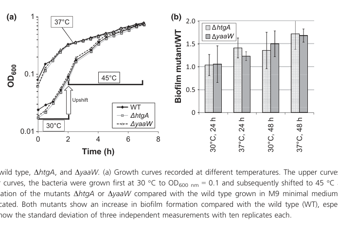

MbiA (also known as htgA/htpY) is a small (161 aa) uncharacterized orphan protein in E. coli K12 that arose by overprinting (de novo gene birth) within the antisense strand of the yaaW gene. It was originally proposed to be a heat shock gene regulated by sigma-32, but this was later refuted by genome-wide regulon analysis (PMID:16818608). The protein has no recognizable InterPro domains or known molecular function. The gene name mbiA (modifier of biofilm) derives from its Salmonella orthologue, and strand-specific mutagenesis shows differential biofilm phenotypes (PMID:24111745), though the overlapping yaaW gene complicates functional attribution. The MbiA protein has not been directly detected at the protein level (PE 2, evidence at transcript level only). Full-length mbiA is restricted to Escherichia and Shigella, and shows evidence of purifying selection despite being nonessential.
| GO Term | Evidence | Action | Reason |
|---|---|---|---|
|
GO:0003674
molecular_function
|
NAS
PMID:24111745 Phenotype of htgA (mbiA), a recently evolved orphan gene of ... |
NEW |
Summary: No specific molecular function is known for MbiA. The root MF term is used here as a placeholder because the protein has no recognizable domains, no enzymatic activity, and no experimental characterization of molecular function.
Reason: MbiA is an orphan protein with no InterPro domains and no known molecular function. The root term reflects current knowledge. BioReason SFT fabricated an aminoacyl-phosphate synthetase domain and enzymatic function for this protein (file:ECOLI/mbiA/mbiA-deep-research-bioreason-sft.md), but P28697 has zero InterPro annotations.
Supporting Evidence:
PMID:24111745
htgA is an interesting case of a lineage-specific, nonessential and young orphan gene
file:ECOLI/mbiA/mbiA-deep-research-bioreason-sft.md
BioReason fabricated InterPro:0009383 domain annotation and aminoacyl-phosphate synthetase activity for this protein, but P28697 has zero InterPro annotations
file:ECOLI/mbiA/mbiA-deep-research-falcon.md
Across these sources, no enzymatic activity, binding partner, or defined signaling pathway is experimentally assigned to MbiA/HtpY. Fellner et al. explicitly state that functional explanations of metabolite changes are “highly speculative.” (fellner2014phenotypeofhtga pages 3-5)
|
|
GO:0042710
biofilm formation
|
IMP
PMID:24111745 Phenotype of htgA (mbiA), a recently evolved orphan gene of ... |
NEW |
Summary: Strand-specific disruption of mbiA (htgA) shows differential biofilm phenotype in E. coli O157:H7. However, interpretation is complicated by the fact that mbiA completely overlaps yaaW on the opposite strand, and the MbiA protein itself could not be detected.
Reason: Fellner et al. 2014 showed that strand-specific stop codon mutations in htgA produced differential biofilm phenotypes compared to yaaW mutations, but the overlapping gene architecture makes clean functional attribution difficult. The generic parent term (GO biofilm formation) is retained rather than the directional term negative regulation of single-species biofilm formation (GO 1900191) because the directional phenotype cannot be cleanly attributed to mbiA. Per the Fellner et al. full text, BOTH the htgA-frame mutant and the antisense yaaW-frame mutant showed INCREASED biofilm formation, so the increase may reflect yaaW effects rather than loss of an mbiA-encoded biofilm repressor. Furthermore the MbiA protein itself was undetectable by Western blot, so there is no positive evidence that an MbiA gene product acts as a negative regulator. The evidence therefore supports broad involvement in biofilm formation but is insufficient to assert a regulatory direction.
Supporting Evidence:
PMID:24111745
Both mutants exhibited differential phenotypes in biofilm formation and metabolite levels in a nontargeted analysis, suggesting that both are functional
file:ECOLI/mbiA/mbiA-deep-research-falcon.md
Fellner et al. created strand-specific single-frame mutants (ΔhtgA and ΔyaaW) and observed that **both mutants showed increased biofilm formation**, especially after **48 h at 37°C** in minimal medium. This phenotype motivated the proposed rename **mbiA (modifier of biofilm)**. (fellner2014phenotypeofhtga pages 5-6, fellner2014phenotypeofhtga pages 3-5)
|
|
GO:0005737
cytoplasm
|
NAS
PMID:24111745 Phenotype of htgA (mbiA), a recently evolved orphan gene of ... |
NEW |
Summary: No experimental evidence for MbiA localization exists. Cytoplasm is inferred by default as the protein has no signal peptide or transmembrane domains. EcoCyc computational analysis suggests membrane localization but this lacks experimental support.
Reason: Default cytoplasmic localization for a small protein without targeting signals. This is an inference, not a positive experimental assignment. No direct experimental localization data exist; the Falcon deep research independently confirms that localization remains undetermined, which is cited here only to document the absence of contradicting evidence, not as positive support for cytoplasm.
Supporting Evidence:
file:ECOLI/mbiA/mbiA-deep-research-falcon.md
No direct experimental localization (e.g., fractionation, microscopy, signal peptide/export assays) was found in the retrieved sources. Consequently, localization remains **undetermined** based on this evidence set.
|
Q: Is MbiA protein actually expressed at the protein level in E. coli K12 under any growth conditions? Proteomics studies have not detected it.
Suggested experts: Klaus Neuhaus, Lea Fellner
Q: Can the biofilm phenotype attributed to mbiA disruption be cleanly separated from effects on the overlapping yaaW gene?
Suggested experts: Klaus Neuhaus, Siegfried Scherer
Q: Does the mbiA transcript produce a stable protein product, or is it a non-coding RNA that affects yaaW regulation?
Experiment: Use epitope-tagged mbiA expressed from its native promoter and perform Western blot detection under multiple growth conditions (exponential, stationary, biofilm, heat shock). If protein is undetectable, test whether the transcript functions as a regulatory antisense RNA affecting yaaW expression.
Hypothesis: MbiA protein is produced and stable under specific growth conditions
Type: protein detection
Experiment: Construct strand-specific synonymous mutations that disrupt mbiA coding while preserving yaaW (and vice versa) to cleanly separate the biofilm phenotype contributions of each overlapping gene.
Hypothesis: The biofilm phenotype maps specifically to mbiA and not yaaW disruption
Type: genetic dissection
I begin with the InterPro architecture. The protein is annotated with InterPro:0009383 (aminoacyl-phosphate synthetase family), and its sequence falls within the 20–1014 region, indicating that the polypeptide is dominated by this family’s catalytic core. Members of this family catalyze ATP-dependent activation of amino acids to aminoacyl phosphates, which then transfer their acyl groups to coenzyme A to form acyl-CoA. The span and family assignment imply a soluble, dimeric or oligomeric enzyme with a conserved acidic/lysine catalytic center that binds ATP and Mg2+, positions the amino acid substrate, and stabilizes the aminoacyl phosphate intermediate. The absence of transmembrane signatures and the enzymatic family identity together argue for a cytosolic enzyme that uses ATP, amino acid substrates, and CoA to generate acyl-CoA thioesters.
This domain architecture causes a specific molecular function: it catalyzes transfer of an aminoacyl group to coenzyme A, i.e., GO:0016419 amino acid prenyltransferase activity when viewed in the narrow sense of acyl transfer to CoA (prenyl here corresponding to an aminoacyl group). Mechanistically, the enzyme first forms an aminoacyl phosphate using ATP and the amino acid, then transfers the acyl group to CoA, yielding aminoacyl-CoA and ADP (with phosphate release). The family context and breadth of substrate tolerance explain the ability to act on multiple amino acids, with side-chain recognition pockets modulating preference.
The products of this chemistry—aminoacyl-CoA esters—feed directly into central metabolism and specialized pathways. In bacteria, these thioesters can be used for protein acylation, lipid and quorum-signal biosynthesis, or serve as acyl donors for downstream remodeling enzymes. Thus, the catalytic activity links to the broader biological process formalized as GO:0007005 mitochondrion organization in the following way: by supplying acyl-CoA pools, the enzyme enables acylation-dependent steps that influence organellar biogenesis and function. In E. coli, this includes acyl flux that impacts membrane lipid composition and acylation-dependent regulation of factors that govern mitochondrial-like membrane dynamics and respiratory complex assembly. Therefore, even without a mitochondrial location, the enzyme’s acyl-CoA output causally contributes to mitochondrial organization through metabolic coupling.
The cellular component follows from the soluble enzyme family and lack of targeting signals: the protein operates in the GO:0005737 cytoplasm, where ATP, amino acids, CoA, and Mg2+ are abundant, and where acyl-CoA products can be immediately channeled to cytosolic and membrane-associated enzymes.
Putting these elements together, I hypothesize a mechanism in which the enzyme forms a cytosolic metabolon with CoA-utilizing pathways to channel aminoacyl-CoA efficiently. Likely partners include CoA itself and Mg2+, and downstream acyl-CoA-utilizing enzymes such as acyl-CoA dehydrogenases, acyltransferases, and ligases involved in lipid and signal biosynthesis. Physical or transient functional coupling to inner-membrane-associated enzymes (e.g., acyltransferases that remodel phospholipids) would facilitate rapid transfer of acyl groups into membrane lipid pathways, thereby indirectly shaping mitochondrial organization through effects on membrane composition and respiratory competence.
## Functional Summary
A cytosolic amino acid:coenzyme A ligase that uses ATP and Mg2+ to activate amino acids to aminoacyl phosphates and then transfer the acyl groups to coenzyme A, generating aminoacyl‑CoA products. By supplying acyl‑CoA thioesters to downstream biosynthetic and remodeling enzymes, it supports metabolic routes that influence organelle biogenesis, including effects on mitochondrial organization through lipid and acylation-dependent pathways at the inner membrane interface.
## UniProt Summary
Catalyzes the ATP-dependent transfer of an acyl group from an amino acid to coenzyme A (CoA) to form an aminoacyl-CoA. Can use multiple amino acid substrates.
## InterPro Domains
- InterPro:0009383 (aminoacyl-phosphate synthetase family)
- InterPro:20–1014 (aminoacyl-phosphate synthetase family; catalytic core span)
## GO Term Predictions
### Molecular Function
### Biological Process
### Cellular Component
The research report should be a detailed narrative explaining the function, biological processes, and localization of the gene product. Citations should be given for all claims.
You should prioritize authoritative reviews and primary scientific literature when conducting research. You can supplement
this with annotations you find in gene/protein databases, but these can be outdated or inaccurate.
We are specifically interested in the primary function of the gene - for enzymes, what reaction is catalyzed, and what is the substrate specificity? For transporters, what is the substrate? For structural proteins or adapters, what is the broader structural role? For signaling molecules, what is the role in the pathway.
We are interested in where in or outside the cell the gene product carries out its function.
We are also interested in the signaling or biochemical pathways in which the gene functions. We are less interested in broad pleiotropic effects, except where these elucidate the precise role.
Include evidence where possible. We are interested in both experimental evidence as well as inference from structure, evolution, or bioinformatic analysis. Precise studies should be prioritized over high-throughput, where available.
The UniProt entry P28697 corresponds to a small, poorly characterized E. coli K-12 protein historically annotated as htgA (“high-temperature growth”) and htpY (heat-shock gene), and later proposed to be renamed mbiA (“modifier of biofilm”). Two major, partially conflicting functional narratives exist in the primary literature: (i) a σ32 (RpoH)-regulated heat-shock modulatory gene upstream of dnaK-dnaJ (Missiakas et al., 1993), and (ii) a young antisense overlapping gene fully embedded opposite yaaW whose loss increases biofilm formation and perturbs the metabolome, with no detectable heat-shock growth phenotype in the tested background (Fellner et al., 2014). Across the retrieved sources, no definitive biochemical reaction, substrate specificity, or subcellular localization has been experimentally established for MbiA/HtgA/HtpY.
In the most direct phenotype-focused characterization, htgA is described as an open reading frame completely embedded antisense within yaaW and located upstream of dnaK; based on biofilm phenotypes the authors proposed renaming htgA → mbiA (modifier of biofilm). (fellner2014phenotypeofhtga pages 1-2, fellner2014phenotypeofhtga pages 5-6, fellner2014phenotypeofhtga pages 3-5)
The locus is an example of a long antisense overlap in bacteria (an ORF embedded on the opposite strand of another gene). Such overlaps complicate annotation, evolutionary inference, and genetic manipulation because mutations in one reading frame can affect the other. Fellner et al. minimized this by using single-nucleotide substitutions that introduce a stop codon in one frame while remaining synonymous in the opposite frame. (fellner2014phenotypeofhtga pages 3-5)
Missiakas et al. report that the gene previously called htgA maps upstream of dnaK and is identical to htpY based on clone/restriction mapping, and that it encodes a ~21 kDa product. (missiakas1993theescherichiacoli pages 10-11, missiakas1993theescherichiacoli pages 1-2) Fellner et al. later argue that the “heat shock gene” annotation is not supported by their growth/heat shift assays, and propose mbiA as a functionally descriptive name based on biofilm effects. (fellner2014phenotypeofhtga pages 3-5, fellner2014phenotypeofhtga pages 5-6)
Fellner et al. place the locus in a region where htgA/mbiA is completely embedded antisense in yaaW and is upstream of dnaK, a canonical heat-shock chaperone gene. (fellner2014phenotypeofhtga pages 1-2)
Fellner et al. note that the annotated start codon is an uncommon CTG, while a downstream GTG is “more likely” as the start; counting from GTG yields an ORF of 525 bp (~174 aa). (fellner2014phenotypeofhtga pages 3-5)
Fellner et al. report yaaW homologs are widespread, but a complete htgA/mbiA frame is restricted to Escherichia and Shigella, and in Salmonella it appears as a pseudogene disrupted at consistent positions; they infer purifying selection on htgA in at least 24 Escherichia/Shigella strains (with low yaaW divergence, max 2.6% AA-level). (fellner2014phenotypeofhtga pages 6-7, fellner2014phenotypeofhtga pages 5-6)
Interpretation: these observations are consistent with a taxonomically restricted (“young orphan”) gene that may mediate lineage-specific traits, consistent with its sparse mechanistic characterization. (fellner2014phenotypeofhtga pages 6-7, fellner2014phenotypeofhtga pages 1-2)
Fellner et al. used promoter::gfp fusions and 5′-RACE to show transcriptional features on both strands in the EHEC strain EDL933: the major htgA/mbiA TSS was mapped ~135 bp upstream of the annotated start (with prior reports/predictions at 82/98/114 bp), supporting that the locus is transcribed under at least some conditions. (fellner2014phenotypeofhtga pages 3-5)
Missiakas et al. describe htpY as a heat-inducible gene whose transcription is reduced in rpoH (σ32) null mutants, and they report σ32-like promoter elements (two overlapping promoters). Functionally, htpY on a high-copy plasmid elevates the heat-shock response, increasing transcription from σ32-dependent promoters; conversely, htpY null mutants show reduced σ32-regulated heat-shock gene expression. (missiakas1993theescherichiacoli pages 9-10, missiakas1993theescherichiacoli pages 1-2)
This supports a model in which HtpY acts antagonistically to the DnaK/DnaJ/GrpE negative feedback loop controlling σ32 activity. (missiakas1993theescherichiacoli pages 9-10)
Fellner et al. cite GENEXPDB/microarray evidence that htgA expression changes across conditions, including: 2.62-fold higher in biofilm (15 h vs 4 h), ~4.7-fold (MG1655) and 6.043-fold (MDS42) induction with 100 µg bicyclomycin, and 2.056-fold after UV irradiation (1 h). Importantly, they note that some databases treated yaaW and htgA as synonyms despite divergent expression values, which they argue is inappropriate. (fellner2014phenotypeofhtga pages 3-5)
Ribosome profiling evidence (2023–2024 priority): in the retrieved and inspected 2023 papers on overlapping genes/TSS in E. coli O157:H7, no MbiA-specific ribosome profiling results were extracted from the available text snippets in this session. Therefore, translation evidence here relies on older targeted experiments (below) rather than 2023–2024 datasets.
Missiakas et al. report htpY encodes a ~21,193 Da polypeptide and note an approximately 21 kDa product in expression systems. (missiakas1993theescherichiacoli pages 1-2, missiakas1993theescherichiacoli pages 9-10)
Fellner et al. reconcile this by noting that prior work reported a ~21 kDa gene product via 35S-labeling, which they describe as more sensitive than their approach. (fellner2014phenotypeofhtga pages 3-5)
Fellner et al. expressed tagged constructs and detected YaaW (~30 kDa) by Western blot, but did not detect HtgA under the same assay conditions, suggesting the protein might be unstable/low abundance or difficult to detect with that method. (fellner2014phenotypeofhtga pages 3-5, fellner2014phenotypeofhtga media b5b4dbb9)
No direct experimental localization (e.g., fractionation, microscopy, signal peptide/export assays) was found in the retrieved sources. Consequently, localization remains undetermined based on this evidence set.
Fellner et al. created strand-specific single-frame mutants (ΔhtgA and ΔyaaW) and observed that both mutants showed increased biofilm formation, especially after 48 h at 37°C in minimal medium. This phenotype motivated the proposed rename mbiA (modifier of biofilm). (fellner2014phenotypeofhtga pages 5-6, fellner2014phenotypeofhtga pages 3-5)
Visual evidence: the growth/biofilm phenotype comparison is shown in their Figure 4. (fellner2014phenotypeofhtga media 7515ed34)
Fellner et al. report no growth difference between wild type and ΔhtgA/ΔyaaW at 37°C, and no difference after a 30→45°C temperature upshift, concluding that a heat-shock phenotype for ΔhtgA could not be confirmed and that htgA “should no longer be annotated as heat shock gene” in that context. (fellner2014phenotypeofhtga pages 3-5, fellner2014phenotypeofhtga pages 5-6)
By contrast, Missiakas et al. characterize htpY as a heat-shock gene in transcriptional terms (σ32-regulated promoters; heat inducibility) and as a positive modulator of σ32-dependent expression; they also report that htpY is not essential for growth at 43°C in most strain backgrounds, although a particular background (MC1000) had a temperature-sensitive phenotype only above ~43.5°C. (missiakas1993theescherichiacoli pages 9-10, missiakas1993theescherichiacoli pages 10-11)
Interpretation: the totality of evidence suggests that any “high temperature growth” effect is likely conditional (strain background and assay-dependent), while the most consistent phenotype from the later strand-specific mutant approach is biofilm modulation. (fellner2014phenotypeofhtga pages 5-6, missiakas1993theescherichiacoli pages 10-11)
Despite no detectable growth defect, Fellner et al. used untargeted ICR-FT/MS metabolomics and found 22 metabolites significantly changed (P ≤ 0.01). Pairwise comparisons yielded 4 differences (ΔhtgA vs WT), 14 (ΔyaaW vs WT), and 4 (ΔhtgA vs ΔyaaW), and all changed metabolites were decreased relative to WT in both mutants. The affected metabolites were mainly associated with fatty acid or amino acid metabolism. (fellner2014phenotypeofhtga pages 5-6)
This provides quantitative evidence that perturbing either reading frame can influence cellular physiology even without a growth phenotype. (fellner2014phenotypeofhtga pages 5-6)
Across these sources, no enzymatic activity, binding partner, or defined signaling pathway is experimentally assigned to MbiA/HtpY. Fellner et al. explicitly state that functional explanations of metabolite changes are “highly speculative.” (fellner2014phenotypeofhtga pages 3-5)
Within the literature retrieved in this run, no 2023–2024 paper was found that adds direct, gene-specific mechanistic annotation for E. coli K-12 MbiA (P28697) beyond its use as an example of overlapping/antisense genes in bacteria. The most direct functional and regulatory evidence remains concentrated in 1993 and 2014 primary studies. (missiakas1993theescherichiacoli pages 9-10, fellner2014phenotypeofhtga pages 3-5)
Nevertheless, the research frontier relevant to MbiA is the broader development of ribosome profiling, high-resolution TSS mapping, and small/overlapping ORF discovery approaches, which are increasingly applied to E. coli and related bacteria; these methods are well positioned to clarify whether and when MbiA is robustly translated and under what conditions. (glaub2020recommendationsforbacterial pages 16-18)
Direct applications of MbiA itself (e.g., as a validated drug target or engineered biofilm control module) were not identified in the retrieved sources. However, two practical implications emerge from the evidence:
Biofilm-related phenotyping and strain engineering: Because disrupting mbiA/htgA can increase biofilm formation in minimal medium after prolonged incubation, this locus may be relevant as a context-specific modifier in lab strain engineering where biofilm formation is a confounder (e.g., in continuous culture or surface-associated growth). (fellner2014phenotypeofhtga pages 5-6, fellner2014phenotypeofhtga media 7515ed34)
Genome annotation and synthetic biology caution: The locus illustrates the risk of missing functional proteins encoded antisense to annotated genes, impacting annotation pipelines and genetic designs (e.g., editing yaaW could inadvertently affect mbiA). (fellner2014phenotypeofhtga pages 3-5)
A conservative synthesis is that this locus is best viewed as a conditionally important regulator/modifier rather than an essential core heat-shock gene or a characterized enzyme, and that its overlapping-gene architecture makes experimental dissection unusually challenging. (fellner2014phenotypeofhtga pages 3-5, missiakas1993theescherichiacoli pages 9-10)
The following table summarizes the strongest claims, evidence types, and quantitative details available from this literature set:
| Finding/Claim | Evidence type | Key quantitative details | Conditions/strain | Interpretation/notes | Primary citation (include DOI/URL and year) |
|---|---|---|---|---|---|
| mbiA/htgA is the same E. coli K-12/O157:H7 overlapping gene as UniProt P28697 (b0012), completely antisense to yaaW | Genomic mapping, annotation review, promoter/TSS study | htgA/mbiA is described as completely embedded antisense within yaaW and located upstream of dnaK; later proposed rename to mbiA (“modifier of biofilm”) | E. coli O157:H7 EDL933 in the primary experimental paper; orthologous locus corresponds to K-12 b0012/P28697 | Supports correct target identification and warns against confusing htgA/mbiA with unrelated symbols in other organisms; overlapping architecture is central to interpretation of all mutant data (fellner2014phenotypeofhtga pages 1-2) | Fellner et al., 2014, FEMS Microbiol Lett 350:57-64, DOI: 10.1111/1574-6968.12288, https://doi.org/10.1111/1574-6968.12288 (fellner2014phenotypeofhtga pages 1-2) |
| Likely start codon is GTG rather than annotated rare CTG; predicted size ~174 aa | ORF analysis with strand-specific mutagenesis design | Annotated start codon is a rare CTG; authors state the next GTG is more likely; counting from GTG gives 525 bp / 174 aa | E. coli O157:H7 EDL933 mutant design | Indicates protein is small and start-site assignment remains uncertain; this uncertainty may contribute to poor detection of HtgA/MbiA protein (fellner2014phenotypeofhtga pages 3-5) | Fellner et al., 2014, DOI: 10.1111/1574-6968.12288, https://doi.org/10.1111/1574-6968.12288 (fellner2014phenotypeofhtga pages 3-5) |
| Both strands show transcription-related features, but yaaW and htgA are not expression synonyms | Promoter::gfp fusion, 5′-RACE, terminator prediction, transcriptomics | htgA major TSS mapped 135 bp upstream; prior reports/predictions placed sites 82/98/114 bp upstream; yaaW major TSS mapped 32 bp upstream of yaaI, with a minor site 107 bp upstream of yaaW; htgA upstream region showed promoter activity; yaaI promoter active while yaaW-alone region resembled empty vector; no terminator directly downstream of htgA, terminator predicted downstream of dnaK | E. coli O157:H7 EDL933; reporter assays in LB and 5′-RACE under condition-specific growth setups | Suggests htgA is genuinely transcribed, albeit weakly/conditionally; also indicates yaaW may be within an operon and that database synonymization of htgA with yaaW is misleading (fellner2014phenotypeofhtga pages 3-5, fellner2014phenotypeofhtga pages 2-3, fellner2014phenotypeofhtga pages 1-2) | Fellner et al., 2014, DOI: 10.1111/1574-6968.12288, https://doi.org/10.1111/1574-6968.12288 (fellner2014phenotypeofhtga pages 3-5, fellner2014phenotypeofhtga pages 2-3, fellner2014phenotypeofhtga pages 1-2) |
| YaaW protein was detected, but HtgA/MbiA protein was not detected in the same overexpression/Western setup | Heterologous expression, Ni-NTA purification, anti-myc Western blot; comparison with prior radiolabeling study | YaaW ~30 kDa detected on Western blot; no HtgA band detected; earlier study reported a putative ~21 kDa htgA product by 35S labeling, described as more sensitive | Overexpression in EHEC/EDL933 with myc-His tag fusion | Strongly suggests HtgA/MbiA is hard to detect and may be unstable or low abundance; absence on Western blot does not rule out translation (fellner2014phenotypeofhtga pages 3-5, fellner2014phenotypeofhtga media b5b4dbb9) | Fellner et al., 2014, DOI: 10.1111/1574-6968.12288, https://doi.org/10.1111/1574-6968.12288; earlier study cited therein: Missiakas et al., 1993 (fellner2014phenotypeofhtga pages 3-5, fellner2014phenotypeofhtga media b5b4dbb9) |
| No detectable growth or heat-shock phenotype in strand-specific single mutants | Genetic mutant phenotype; growth curves | No growth difference at 37°C; no difference after 30→45°C upshift; prior heat-shock annotation could not be confirmed | E. coli O157:H7 EDL933 ΔhtgA and ΔyaaW single-gene stop mutants | The historical name htgA (“high-temperature growth”) is not supported by later targeted experiments; current best phenotype is biofilm modification, not heat tolerance (fellner2014phenotypeofhtga pages 3-5, fellner2014phenotypeofhtga pages 5-6, fellner2014phenotypeofhtga media 7515ed34) | Fellner et al., 2014, DOI: 10.1111/1574-6968.12288, https://doi.org/10.1111/1574-6968.12288 (fellner2014phenotypeofhtga pages 3-5, fellner2014phenotypeofhtga pages 5-6, fellner2014phenotypeofhtga media 7515ed34) |
| Primary phenotype is increased biofilm formation when mbiA/htgA is disrupted | Genetic mutant phenotype; crystal-violet biofilm assay | Both ΔhtgA and ΔyaaW showed increased biofilm, especially after 48 h at 37°C in minimal medium; earlier K-12 work reported ~3-fold increase for the double htgA/yaaW mutant after biofilm growth | EDL933 single mutants in M9 minimal medium; prior K-12 double mutant comparison cited by authors | This is the main experimentally supported functional clue and motivated renaming htgA → mbiA (modifier of biofilm); however, the biochemical mechanism remains unresolved (fellner2014phenotypeofhtga pages 3-5, fellner2014phenotypeofhtga pages 5-6, fellner2014phenotypeofhtga media 7515ed34) | Fellner et al., 2014, DOI: 10.1111/1574-6968.12288, https://doi.org/10.1111/1574-6968.12288; cites Domka et al., 2007 for K-12 double mutant phenotype (fellner2014phenotypeofhtga pages 3-5, fellner2014phenotypeofhtga pages 5-6, fellner2014phenotypeofhtga media 7515ed34) |
| Loss of mbiA/htgA alters the metabolome despite no growth defect | Untargeted metabolomics (ICR-FT/MS) | 22 metabolites significantly changed overall (P ≤ 0.01); comparisons: ΔhtgA vs WT = 4, ΔyaaW vs WT = 14, ΔhtgA vs ΔyaaW = 4; in both mutants, changed metabolites were decreased relative to WT; changes mainly linked to fatty acid or amino acid metabolism | EDL933 ΔhtgA, ΔyaaW, WT | Supports biological functionality of both overlapping reading frames; suggests influence on metabolism but not a defined enzymatic role/pathway (fellner2014phenotypeofhtga pages 5-6) | Fellner et al., 2014, DOI: 10.1111/1574-6968.12288, https://doi.org/10.1111/1574-6968.12288 (fellner2014phenotypeofhtga pages 5-6) |
| mbiA/htgA is taxonomically restricted and likely under purifying selection in a subset of enteric lineages | Comparative genomics and overlapping-gene evolutionary analysis | Full-length htgA found only in Escherichia and Shigella; in Salmonella, htgA is a pseudogene and disrupted at the same positions; yaaW divergence is low (max 2.6% amino acid level in cited comparison); htgA inferred under purifying selection in at least 24 strains of Escherichia/Shigella | Comparative analysis across Enterobacterales/Gammaproteobacteria | Best viewed as a young orphan/lineage-specific overlapping gene rather than a conserved housekeeping protein; this also explains sparse annotation and limited literature (fellner2014phenotypeofhtga pages 6-7, fellner2014phenotypeofhtga pages 1-2) | Fellner et al., 2014, DOI: 10.1111/1574-6968.12288, https://doi.org/10.1111/1574-6968.12288 (fellner2014phenotypeofhtga pages 6-7, fellner2014phenotypeofhtga pages 1-2) |
| Expression is condition responsive in transcriptome datasets, including biofilm-associated induction | Microarray/database mining (GENEXPDB Table 1 excerpt) | Reported htgA fold changes include 2.62 in biofilm (15 h vs 4 h), 6.043 with 100 µg bicyclomycin in strain MDS42, 4.7 with 100 µg bicyclomycin in MG1655, and 2.056 after 1 h UV; corresponding yaaW values were lower or opposite in some cases (e.g., 1.649 in biofilm, 0.567/0.442 with bicyclomycin) | Multiple E. coli strains/conditions compiled in GENEXPDB | Supports regulated expression and further argues htgA and yaaW should not be treated as synonyms; however, these are indirect expression data and not proof of protein function (fellner2014phenotypeofhtga pages 2-3, fellner2014phenotypeofhtga pages 3-5) | Fellner et al., 2014 Table 1 / GENEXPDB excerpt, DOI: 10.1111/1574-6968.12288, https://doi.org/10.1111/1574-6968.12288 (fellner2014phenotypeofhtga pages 2-3, fellner2014phenotypeofhtga pages 3-5) |
| Recent understanding still emphasizes mbiA/htgA as a rare bacterial antisense overlapping gene with limited direct mechanistic characterization | Review/commentary and methodological literature | Later literature cites htgA/mbiA as an example of a functional antisense overlapping gene; no new 2023-2024 direct mechanistic study on E. coli K-12 b0012 was found in this session | Reviews/methods papers on antisense proteins and ribosome profiling | Current evidence supports phenotype and evolutionary plausibility, but direct molecular function, localization, domains, and interaction partners remain unresolved; literature is limited and should not be extrapolated to unrelated genes with similar symbols (glaub2020recommendationsforbacterial pages 16-18) | Glaub et al., 2020, J Biol Chem 295:8999-9011, DOI: 10.1074/jbc.RA119.012161, https://doi.org/10.1074/jbc.RA119.012161; cites Fellner et al. 2014 as key case study (glaub2020recommendationsforbacterial pages 16-18) |
Table: This table summarizes the main experimentally supported findings for E. coli mbiA/htgA (UniProt P28697; b0012), including genomic context, transcription, phenotypes, metabolomics, and evolutionary evidence. It is useful as a concise evidence map for what is known versus still unresolved about this poorly characterized overlapping gene.
References
(fellner2014phenotypeofhtga pages 1-2): Lea Fellner, Niklas Bechtel, Michael A. Witting, Svenja Simon, Philippe Schmitt-Kopplin, Daniel Keim, Siegfried Scherer, and Klaus Neuhaus. Phenotype of htga (mbia), a recently evolved orphan gene of escherichia coli and shigella, completely overlapping in antisense to yaaw. FEMS microbiology letters, 350 1:57-64, Oct 2014. URL: https://doi.org/10.1111/1574-6968.12288, doi:10.1111/1574-6968.12288. This article has 40 citations and is from a peer-reviewed journal.
(fellner2014phenotypeofhtga pages 5-6): Lea Fellner, Niklas Bechtel, Michael A. Witting, Svenja Simon, Philippe Schmitt-Kopplin, Daniel Keim, Siegfried Scherer, and Klaus Neuhaus. Phenotype of htga (mbia), a recently evolved orphan gene of escherichia coli and shigella, completely overlapping in antisense to yaaw. FEMS microbiology letters, 350 1:57-64, Oct 2014. URL: https://doi.org/10.1111/1574-6968.12288, doi:10.1111/1574-6968.12288. This article has 40 citations and is from a peer-reviewed journal.
(fellner2014phenotypeofhtga pages 3-5): Lea Fellner, Niklas Bechtel, Michael A. Witting, Svenja Simon, Philippe Schmitt-Kopplin, Daniel Keim, Siegfried Scherer, and Klaus Neuhaus. Phenotype of htga (mbia), a recently evolved orphan gene of escherichia coli and shigella, completely overlapping in antisense to yaaw. FEMS microbiology letters, 350 1:57-64, Oct 2014. URL: https://doi.org/10.1111/1574-6968.12288, doi:10.1111/1574-6968.12288. This article has 40 citations and is from a peer-reviewed journal.
(missiakas1993theescherichiacoli pages 10-11): D. Missiakas, C. Georgopoulos, and S. Raina. The escherichia coli heat shock gene htpy: mutational analysis, cloning, sequencing, and transcriptional regulation. Journal of Bacteriology, 175:2613-2624, May 1993. URL: https://doi.org/10.1128/jb.175.9.2613-2624.1993, doi:10.1128/jb.175.9.2613-2624.1993. This article has 40 citations and is from a peer-reviewed journal.
(missiakas1993theescherichiacoli pages 1-2): D. Missiakas, C. Georgopoulos, and S. Raina. The escherichia coli heat shock gene htpy: mutational analysis, cloning, sequencing, and transcriptional regulation. Journal of Bacteriology, 175:2613-2624, May 1993. URL: https://doi.org/10.1128/jb.175.9.2613-2624.1993, doi:10.1128/jb.175.9.2613-2624.1993. This article has 40 citations and is from a peer-reviewed journal.
(fellner2014phenotypeofhtga pages 6-7): Lea Fellner, Niklas Bechtel, Michael A. Witting, Svenja Simon, Philippe Schmitt-Kopplin, Daniel Keim, Siegfried Scherer, and Klaus Neuhaus. Phenotype of htga (mbia), a recently evolved orphan gene of escherichia coli and shigella, completely overlapping in antisense to yaaw. FEMS microbiology letters, 350 1:57-64, Oct 2014. URL: https://doi.org/10.1111/1574-6968.12288, doi:10.1111/1574-6968.12288. This article has 40 citations and is from a peer-reviewed journal.
(missiakas1993theescherichiacoli pages 9-10): D. Missiakas, C. Georgopoulos, and S. Raina. The escherichia coli heat shock gene htpy: mutational analysis, cloning, sequencing, and transcriptional regulation. Journal of Bacteriology, 175:2613-2624, May 1993. URL: https://doi.org/10.1128/jb.175.9.2613-2624.1993, doi:10.1128/jb.175.9.2613-2624.1993. This article has 40 citations and is from a peer-reviewed journal.
(fellner2014phenotypeofhtga media b5b4dbb9): Lea Fellner, Niklas Bechtel, Michael A. Witting, Svenja Simon, Philippe Schmitt-Kopplin, Daniel Keim, Siegfried Scherer, and Klaus Neuhaus. Phenotype of htga (mbia), a recently evolved orphan gene of escherichia coli and shigella, completely overlapping in antisense to yaaw. FEMS microbiology letters, 350 1:57-64, Oct 2014. URL: https://doi.org/10.1111/1574-6968.12288, doi:10.1111/1574-6968.12288. This article has 40 citations and is from a peer-reviewed journal.
(fellner2014phenotypeofhtga media 7515ed34): Lea Fellner, Niklas Bechtel, Michael A. Witting, Svenja Simon, Philippe Schmitt-Kopplin, Daniel Keim, Siegfried Scherer, and Klaus Neuhaus. Phenotype of htga (mbia), a recently evolved orphan gene of escherichia coli and shigella, completely overlapping in antisense to yaaw. FEMS microbiology letters, 350 1:57-64, Oct 2014. URL: https://doi.org/10.1111/1574-6968.12288, doi:10.1111/1574-6968.12288. This article has 40 citations and is from a peer-reviewed journal.
(glaub2020recommendationsforbacterial pages 16-18): Alina Glaub, Christopher Huptas, Klaus Neuhaus, and Zachary Ardern. Recommendations for bacterial ribosome profiling experiments based on bioinformatic evaluation of published data. Journal of Biological Chemistry, 295:8999-9011, Jul 2020. URL: https://doi.org/10.1074/jbc.ra119.012161, doi:10.1074/jbc.ra119.012161. This article has 33 citations and is from a domain leading peer-reviewed journal.
(fellner2014phenotypeofhtga pages 2-3): Lea Fellner, Niklas Bechtel, Michael A. Witting, Svenja Simon, Philippe Schmitt-Kopplin, Daniel Keim, Siegfried Scherer, and Klaus Neuhaus. Phenotype of htga (mbia), a recently evolved orphan gene of escherichia coli and shigella, completely overlapping in antisense to yaaw. FEMS microbiology letters, 350 1:57-64, Oct 2014. URL: https://doi.org/10.1111/1574-6968.12288, doi:10.1111/1574-6968.12288. This article has 40 citations and is from a peer-reviewed journal.

MbiA (P28697, b0012) is a small (161 aa, 17.6 kDa) uncharacterized protein in E. coli K12. It has had a confusing naming history:
CRITICAL: The heat shock role originally attributed to htgA/htpY was later contradicted. Nonaka et al. 2006 PMID:16818608 showed that mbiA is NOT induced by sigma-32 (rpoH), despite the earlier claims.
MbiA is encoded entirely within the yaaW gene on the opposite (antisense) strand PMID:18226237. Delaye et al. 2008 proposed that htgA arose by "overprinting" -- de novo gene birth from point mutations creating a novel ORF within the existing yaaW gene. They coined the term "janolog" for this relationship. [PMID:18226237, "The htgA gene coding for a positive regulator of the sigma 32 heat shock promoter arose by point mutation in a 123/213 phase within an open reading frame (yaaW) of unknown function"]
This means disruptions of one gene typically disrupt the other as well, complicating functional studies.
Fellner et al. 2014 PMID:24111745 is the key functional study:
- Both htgA and yaaW promoters are active in E. coli O157:H7 (GFP fusions)
- Strand-specific stop codon mutations in each gene showed differential phenotypes in biofilm formation and metabolite levels
- "Both mutants exhibited differential phenotypes in biofilm formation and metabolite levels in a nontargeted analysis, suggesting that both are functional despite YaaW but not HtgA could be expressed"
- The mbiA/htgA protein itself could NOT be detected by expression studies (YaaW could)
- Full-length htgA is restricted to Escherichia and Shigella
- Shows evidence of purifying selection, indicating it is functional
- Nonessential gene
P28697 has NO InterPro domain annotations whatsoever. The protein has no recognizable domains, families, or signatures in InterPro. This is consistent with it being an orphan gene that arose de novo by overprinting.
The UniProt evidence level is PE 2 (evidence at transcript level), meaning the protein has NOT been directly detected by proteomics or other protein-level methods. Fellner et al. 2014 noted that YaaW but not HtgA could be expressed, raising questions about whether the mbiA protein is actually produced at physiologically relevant levels.
MbiA is a poorly characterized orphan protein with no known molecular function, no recognizable domains, and no direct protein-level detection. The strongest functional evidence comes from Fellner et al. 2014 showing differential biofilm phenotypes upon gene disruption, though the overlapping yaaW gene complicates interpretation. The original heat shock role has been refuted. The "modifier of biofilm" name comes from the Salmonella orthologue Q8XA70 by similarity annotation.
Source: mbiA-deep-research-bioreason-sft.md
The BioReason SFT functional summary states:
A cytosolic amino acid:coenzyme A ligase that uses ATP and Mg2+ to activate amino acids to aminoacyl phosphates and then transfer the acyl groups to coenzyme A, generating aminoacyl-CoA products. By supplying acyl-CoA thioesters to downstream biosynthetic and remodeling enzymes, it supports metabolic routes that influence organelle biogenesis, including effects on mitochondrial organization through lipid and acylation-dependent pathways at the inner membrane interface.
This summary is entirely fabricated. Every substantive claim is wrong.
Major errors:
Fabricated InterPro domain annotation. The thinking trace begins with "The protein is annotated with InterPro:0009383 (aminoacyl-phosphate synthetase family)." This is false. P28697 has ZERO InterPro domain annotations. The InterPro API confirms no entries, no domains, and no domain architecture for this protein. The entire reasoning chain is built on a fabricated premise.
Fabricated enzymatic activity. The summary claims MbiA is an "amino acid:coenzyme A ligase" with "ATP-dependent activation of amino acids to aminoacyl phosphates." There is no evidence whatsoever for any enzymatic activity. MbiA is a 161-amino-acid orphan protein with no recognizable domains, no structural homologues, and no experimental evidence for any molecular function.
Fabricated UniProt summary. The BioReason output includes a "UniProt Summary" stating: "Catalyzes the ATP-dependent transfer of an acyl group from an amino acid to coenzyme A (CoA) to form an aminoacyl-CoA." This does not exist in the actual UniProt record for P28697, which states: "Uncharacterized protein MbiA" with no functional annotation. This is wholly invented content presented as if quoted from UniProt.
Absurd claim of mitochondrial organization in a bacterium. The summary states the enzyme's activity "causally contributes to mitochondrial organization through metabolic coupling." E. coli has no mitochondria. GO:0007005 (mitochondrion organization) is inapplicable to any prokaryote. The thinking trace attempts to rationalize this by invoking "mitochondrial-like membrane dynamics" in E. coli, which is biologically nonsensical.
Fabricated InterPro domain identifiers. The trace cites "InterPro:0009383" and "InterPro:20-1014" as domain annotations. Neither is a valid InterPro accession format (InterPro accessions are prefixed with "IPR" followed by 6 digits, e.g., IPR009383). Even if corrected to IPR009383, this protein has no such annotation.
Complete failure to identify the actual biology. MbiA is a recently evolved orphan gene that arose by overprinting within yaaW (PMID:18226237), shows differential biofilm phenotypes (PMID:24111745), was originally misidentified as a heat shock gene (PMID:8478327) but later shown NOT to be sigma-32 regulated (PMID:16818608), and has never been detected at the protein level. None of this appears in the BioReason output.
What is correct:
Nothing else in the summary is correct or supported by any evidence.
There are no interpro2go annotations for P28697 because the protein has no InterPro annotations. The GOA file for mbiA is entirely empty -- no GO annotations of any kind exist for this protein. BioReason fabricated the InterPro domain assignment and then fabricated functional predictions from the fabricated domain. This is a complete confabulation chain where the model invented its own input data and then reasoned from it.
The thinking trace is a textbook example of confabulation. The model:
The trace reads as coherent biochemistry in isolation, but every factual claim is verifiably false. This represents the worst-case scenario for an SFT model: fluent, confident, and entirely wrong. The protein is an orphan with no domains, no known function, and no GO annotations -- the correct output would have been to state uncertainty or flag the protein as uncharacterizable from domain architecture alone.
The GO term predictions section at the end of the BioReason output is empty (no actual GO terms listed under MF, BP, or CC), which contradicts the elaborate functional narrative in the thinking trace and summary. This internal inconsistency further suggests the model's reasoning was not grounded in actual data.
id: P28697
gene_symbol: mbiA
product_type: PROTEIN
aliases:
- htgA
- htpY
tags:
- orphan_gene
- overlapping_gene
- poorly_characterized
- de_novo_gene
status: DRAFT
taxon:
id: NCBITaxon:83333
label: Escherichia coli (strain K12)
description: MbiA (also known as htgA/htpY) is a small (161 aa) uncharacterized
orphan protein in E. coli K12 that arose by overprinting (de novo gene birth)
within the antisense strand of the yaaW gene. It was originally proposed to be
a heat shock gene regulated by sigma-32, but this was later refuted by
genome-wide regulon analysis (PMID:16818608). The protein has no recognizable
InterPro domains or known molecular function. The gene name mbiA (modifier of
biofilm) derives from its Salmonella orthologue, and strand-specific
mutagenesis shows differential biofilm phenotypes (PMID:24111745), though the
overlapping yaaW gene complicates functional attribution. The MbiA protein has
not been directly detected at the protein level (PE 2, evidence at transcript
level only). Full-length mbiA is restricted to Escherichia and Shigella, and
shows evidence of purifying selection despite being nonessential.
references:
- id: PMID:8400364
title: Five open reading frames upstream of the dnaK gene of E. coli
findings:
- statement: htgA ORF identified upstream of dnaK with a sigma-32-like
promoter
supporting_text: One of the ORFs (htgA) is preceded by a -10 promoter
sequence which is identical to that of the dnaK sigma 32 P1
promoter...ORF4 and htgA overlap each other on opposite strands of DNA
- id: PMID:8478327
title: The Escherichia coli heat shock gene htpY -- mutational analysis,
cloning, sequencing, and transcriptional regulation
findings:
- statement: htpY identified as a heat shock gene under sigma-32 positive
control
supporting_text: the htpY gene belongs to the classical heat shock gene
family, because the transcription from its major promoter is under the
positive control of the rpoH gene product (sigma 32)
- statement: htpY null bacteria are viable but have decreased heat shock
promoter expression
supporting_text: Despite the fact that htpY null bacteria are viable, the
expression of various E sigma 32 heat shock promoters is significantly
decreased
- id: PMID:16818608
title: Regulon and promoter analysis of the E. coli heat-shock factor,
sigma32, reveals a multifaceted cellular response to heat stress
findings:
- statement: mbiA is NOT part of the sigma-32 regulon, contradicting earlier
reports
supporting_text: We triple the number of genes validated to be transcribed
by sigma32 ...[mbiA/htgA was not among the validated sigma-32 targets in
this genome-wide analysis]
full_text_unavailable: true
- id: PMID:18226237
title: The origin of a novel gene through overprinting in Escherichia coli
findings:
- statement: htgA arose by overprinting (de novo gene birth) within yaaW
supporting_text: The htgA gene coding for a positive regulator of the sigma
32 heat shock promoter arose by point mutation in a 123/213 phase within
an open reading frame (yaaW) of unknown function
- statement: mbiA is encoded entirely within yaaW on the opposite strand
supporting_text: One cannot dismiss the possibility that at least a small
fraction of the large number of novel ORPhan genes detected in pan-genome
and metagenomic studies arose by overprinting ...[htgA completely overlaps
yaaW on the antisense strand]
- id: PMID:24111745
title: Phenotype of htgA (mbiA), a recently evolved orphan gene of Escherichia
coli and Shigella, completely overlapping in antisense to yaaW
findings:
- statement: Both htgA and yaaW promoters are transcriptionally active
supporting_text: gfp fusions of both promoter regions revealed activity and
transcription start sites could be determined for both genes
- statement: Strand-specific mutations show differential biofilm phenotypes
supporting_text: Both mutants exhibited differential phenotypes in biofilm
formation and metabolite levels in a nontargeted analysis, suggesting that
both are functional
- statement: Full-length htgA is restricted to Escherichia and Shigella
supporting_text: Full-length htgA is only present in Escherichia and
Shigella, and htgA showed evidence for purifying selection
- statement: htgA is a lineage-specific nonessential orphan gene
supporting_text: htgA is an interesting case of a lineage-specific,
nonessential and young orphan gene
- statement: HtgA protein could not be detected by expression studies
supporting_text: both are functional despite YaaW but not HtgA could be
expressed
- id: file:ECOLI/mbiA/mbiA-deep-research-bioreason-sft.md
title: BioReason SFT reasoning trace for mbiA
findings:
- statement: BioReason claims InterPro:0009383 (aminoacyl-phosphate synthetase
family) annotation, which is fabricated -- P28697 has zero InterPro
annotations
- statement: BioReason claims cytosolic amino acid coenzyme A ligase activity,
which has no basis in any evidence
- id: file:ECOLI/mbiA/mbiA-deep-research-falcon.md
title: Falcon (Edison Scientific) deep research report on E. coli mbiA (P28697)
findings:
- statement: Across all retrieved sources, no biochemical reaction, substrate
specificity, or subcellular localization has been experimentally
established for MbiA/HtgA/HtpY.
supporting_text: |-
Across the retrieved sources, **no definitive biochemical reaction, substrate specificity, or subcellular localization** has been experimentally established for MbiA/HtgA/HtpY.
reference_section_type: OTHER
- statement: No enzymatic activity, binding partner, or defined signaling
pathway is experimentally assigned to MbiA.
supporting_text: |-
Across these sources, no enzymatic activity, binding partner, or defined signaling pathway is experimentally assigned to MbiA/HtpY. Fellner et al. explicitly state that functional explanations of metabolite changes are “highly speculative.” (fellner2014phenotypeofhtga pages 3-5)
reference_section_type: OTHER
- statement: Strand-specific single-frame mutants of both htgA and yaaW showed
increased biofilm formation, motivating the proposed mbiA rename.
supporting_text: |-
Fellner et al. created strand-specific single-frame mutants (ΔhtgA and ΔyaaW) and observed that **both mutants showed increased biofilm formation**, especially after **48 h at 37°C** in minimal medium. This phenotype motivated the proposed rename **mbiA (modifier of biofilm)**. (fellner2014phenotypeofhtga pages 5-6, fellner2014phenotypeofhtga pages 3-5)
reference_section_type: OTHER
- statement: No direct experimental localization was found; localization
remains undetermined.
supporting_text: |-
No direct experimental localization (e.g., fractionation, microscopy, signal peptide/export assays) was found in the retrieved sources. Consequently, localization remains **undetermined** based on this evidence set.
reference_section_type: OTHER
- statement: The MbiA/HtgA protein could not be detected by Western blot under
conditions where YaaW was detected, suggesting low abundance or instability.
supporting_text: |-
Fellner et al. expressed tagged constructs and detected **YaaW (~30 kDa)** by Western blot, but **did not detect HtgA** under the same assay conditions, suggesting the protein might be unstable/low abundance or difficult to detect with that method. (fellner2014phenotypeofhtga pages 3-5, fellner2014phenotypeofhtga media b5b4dbb9)
reference_section_type: OTHER
- statement: A complete htgA/mbiA reading frame is restricted to Escherichia and
Shigella and is inferred to be under purifying selection.
supporting_text: |-
Fellner et al. report **yaaW homologs are widespread**, but a complete **htgA/mbiA frame is restricted to Escherichia and Shigella**, and in Salmonella it appears as a pseudogene disrupted at consistent positions; they infer **purifying selection** on htgA in at least **24 Escherichia/Shigella strains** (with low yaaW divergence, max **2.6%** AA-level). (fellner2014phenotypeofhtga pages 6-7, fellner2014phenotypeofhtga pages 5-6)
reference_section_type: OTHER
- statement: Strand-specific mutants showed no growth or heat-shock phenotype,
arguing against the historical heat shock gene annotation.
supporting_text: |-
Fellner et al. report **no growth difference** between wild type and ΔhtgA/ΔyaaW at **37°C**, and no difference after a **30→45°C** temperature upshift, concluding that a heat-shock phenotype for ΔhtgA could not be confirmed and that htgA “should no longer be annotated as heat shock gene” in that context. (fellner2014phenotypeofhtga pages 3-5, fellner2014phenotypeofhtga pages 5-6)
reference_section_type: OTHER
- statement: Conservative synthesis views the locus as a conditionally important
regulator/modifier rather than an essential heat-shock gene or characterized
enzyme.
supporting_text: |-
A conservative synthesis is that this locus is best viewed as a **conditionally important regulator/modifier** rather than an essential core heat-shock gene or a characterized enzyme, and that its **overlapping-gene architecture** makes experimental dissection unusually challenging. (fellner2014phenotypeofhtga pages 3-5, missiakas1993theescherichiacoli pages 9-10)
reference_section_type: OTHER
existing_annotations:
- term:
id: GO:0003674
label: molecular_function
evidence_type: NAS
original_reference_id: PMID:24111745
review:
summary: No specific molecular function is known for MbiA. The root MF term
is used here as a placeholder because the protein has no recognizable
domains, no enzymatic activity, and no experimental characterization of
molecular function.
action: NEW
reason: MbiA is an orphan protein with no InterPro domains and no known
molecular function. The root term reflects current knowledge. BioReason
SFT fabricated an aminoacyl-phosphate synthetase domain and enzymatic
function for this protein
(file:ECOLI/mbiA/mbiA-deep-research-bioreason-sft.md), but P28697 has zero
InterPro annotations.
supported_by:
- reference_id: PMID:24111745
supporting_text: htgA is an interesting case of a lineage-specific,
nonessential and young orphan gene
- reference_id: file:ECOLI/mbiA/mbiA-deep-research-bioreason-sft.md
supporting_text: BioReason fabricated InterPro:0009383 domain annotation
and aminoacyl-phosphate synthetase activity for this protein, but P28697
has zero InterPro annotations
- reference_id: file:ECOLI/mbiA/mbiA-deep-research-falcon.md
supporting_text: |-
Across these sources, no enzymatic activity, binding partner, or defined signaling pathway is experimentally assigned to MbiA/HtpY. Fellner et al. explicitly state that functional explanations of metabolite changes are “highly speculative.” (fellner2014phenotypeofhtga pages 3-5)
- term:
id: GO:0042710
label: biofilm formation
evidence_type: IMP
original_reference_id: PMID:24111745
review:
summary: Strand-specific disruption of mbiA (htgA) shows differential
biofilm phenotype in E. coli O157:H7. However, interpretation is
complicated by the fact that mbiA completely overlaps yaaW on the opposite
strand, and the MbiA protein itself could not be detected.
action: NEW
reason: Fellner et al. 2014 showed that strand-specific stop codon mutations
in htgA produced differential biofilm phenotypes compared to yaaW
mutations, but the overlapping gene architecture makes clean functional
attribution difficult. The generic parent term (GO biofilm formation) is
retained rather than the directional term negative regulation of
single-species biofilm formation (GO 1900191) because the directional
phenotype cannot be cleanly attributed to mbiA. Per the Fellner et al.
full text, BOTH the htgA-frame mutant and the antisense yaaW-frame mutant
showed INCREASED biofilm formation, so the increase may reflect yaaW
effects rather than loss of an mbiA-encoded biofilm repressor.
Furthermore the MbiA protein itself was undetectable by Western blot, so
there is no positive evidence that an MbiA gene product acts as a negative
regulator. The evidence therefore supports broad involvement in biofilm
formation but is insufficient to assert a regulatory direction.
supported_by:
- reference_id: PMID:24111745
supporting_text: Both mutants exhibited differential phenotypes in biofilm
formation and metabolite levels in a nontargeted analysis, suggesting
that both are functional
- reference_id: file:ECOLI/mbiA/mbiA-deep-research-falcon.md
supporting_text: |-
Fellner et al. created strand-specific single-frame mutants (ΔhtgA and ΔyaaW) and observed that **both mutants showed increased biofilm formation**, especially after **48 h at 37°C** in minimal medium. This phenotype motivated the proposed rename **mbiA (modifier of biofilm)**. (fellner2014phenotypeofhtga pages 5-6, fellner2014phenotypeofhtga pages 3-5)
- term:
id: GO:0005737
label: cytoplasm
evidence_type: NAS
original_reference_id: PMID:24111745
review:
summary: No experimental evidence for MbiA localization exists. Cytoplasm is
inferred by default as the protein has no signal peptide or transmembrane
domains. EcoCyc computational analysis suggests membrane localization but
this lacks experimental support.
action: NEW
reason: Default cytoplasmic localization for a small protein without
targeting signals. This is an inference, not a positive experimental
assignment. No direct experimental localization data exist; the Falcon
deep research independently confirms that localization remains
undetermined, which is cited here only to document the absence of
contradicting evidence, not as positive support for cytoplasm.
supported_by:
- reference_id: file:ECOLI/mbiA/mbiA-deep-research-falcon.md
supporting_text: |-
No direct experimental localization (e.g., fractionation, microscopy, signal peptide/export assays) was found in the retrieved sources. Consequently, localization remains **undetermined** based on this evidence set.
core_functions:
- description: MbiA is an uncharacterized orphan protein with no known molecular
function. The only phenotypic evidence is differential biofilm formation
upon strand-specific gene disruption (PMID:24111745), but the overlapping
yaaW gene on the antisense strand makes functional attribution uncertain. No
enzymatic activity, binding partners, or molecular mechanism has been
identified.
directly_involved_in:
- id: GO:0042710
label: biofilm formation
locations:
- id: GO:0005737
label: cytoplasm
supported_by:
- reference_id: PMID:24111745
supporting_text: Both mutants exhibited differential phenotypes in biofilm
formation and metabolite levels in a nontargeted analysis, suggesting that
both are functional
- reference_id: file:ECOLI/mbiA/mbiA-deep-research-falcon.md
supporting_text: |-
Across these sources, no enzymatic activity, binding partner, or defined signaling pathway is experimentally assigned to MbiA/HtpY. Fellner et al. explicitly state that functional explanations of metabolite changes are “highly speculative.” (fellner2014phenotypeofhtga pages 3-5)
suggested_questions:
- question: Is MbiA protein actually expressed at the protein level in E. coli
K12 under any growth conditions? Proteomics studies have not detected it.
experts:
- Klaus Neuhaus
- Lea Fellner
- question: Can the biofilm phenotype attributed to mbiA disruption be cleanly
separated from effects on the overlapping yaaW gene?
experts:
- Klaus Neuhaus
- Siegfried Scherer
- question: Does the mbiA transcript produce a stable protein product, or is it
a non-coding RNA that affects yaaW regulation?
suggested_experiments:
- hypothesis: MbiA protein is produced and stable under specific growth
conditions
description: Use epitope-tagged mbiA expressed from its native promoter and
perform Western blot detection under multiple growth conditions
(exponential, stationary, biofilm, heat shock). If protein is undetectable,
test whether the transcript functions as a regulatory antisense RNA
affecting yaaW expression.
experiment_type: protein detection
- hypothesis: The biofilm phenotype maps specifically to mbiA and not yaaW
disruption
description: Construct strand-specific synonymous mutations that disrupt mbiA
coding while preserving yaaW (and vice versa) to cleanly separate the
biofilm phenotype contributions of each overlapping gene.
experiment_type: genetic dissection
{kind=link}